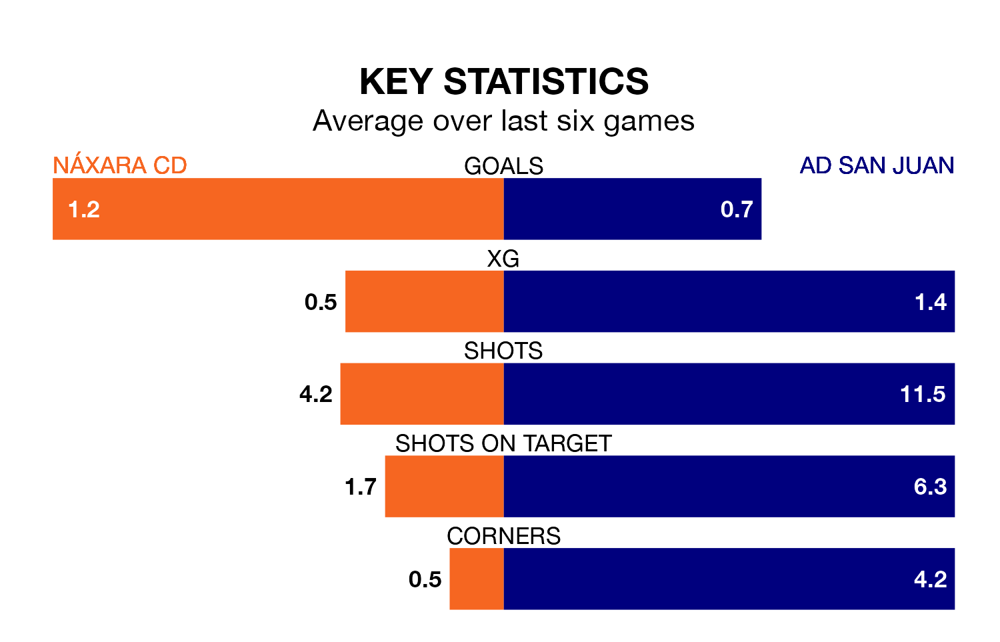

Sunday's match sees the league's two bottom sides face each other, as rock-bottom Náxara CD host AD San Juan.
Náxara CD have picked up nine points from their first nine Segunda División RFEF Group 2 games, with two wins and three draws.
That is three points less than San Juan have collected, having won three and drawn three.
Náxara CD are in bad form in Segunda División RFEF Group 2, with one win and a draw from their last six games.
But with no wins and two draws over that period, San Juan's form is even worse – they have taken two points from 18, compared to the home side's four.
With 12 goals in 19 games so far this season, the visitors are the league's third-lowest scorers with 0.6 goals per game. And they are conceding more than average, letting in 36 goals at a rate of 1.9 per game.
Náxara CD are also below average scorers, with 0.7 goals per game, compared to a league average of 1.1. They have conceded 1.8 goals per game.
In the last three years, Náxara CD and San Juan have played each other on three occasions. San Juan won all of them.
Their last meeting was on September 23, when San Juan won 2-1 at home.
Náxara CD's last match was on January 21, a 2-2 draw against Real Zaragoza B.
San Juan drew 1-1 with CD Calahorra last time out, also on January 21.
Updated: 09:07 (UTC), 24/01/24